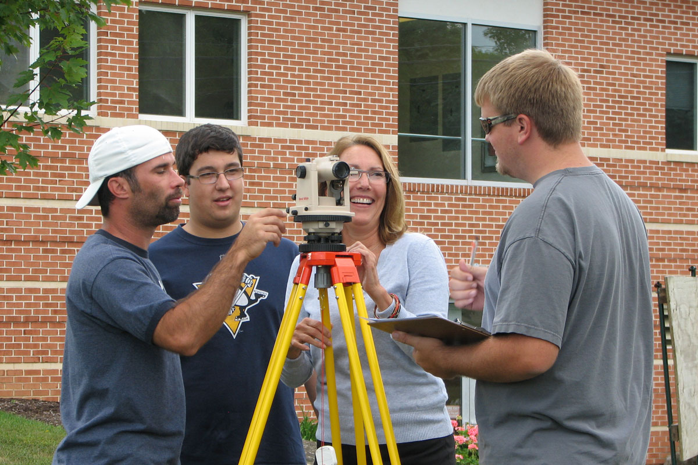
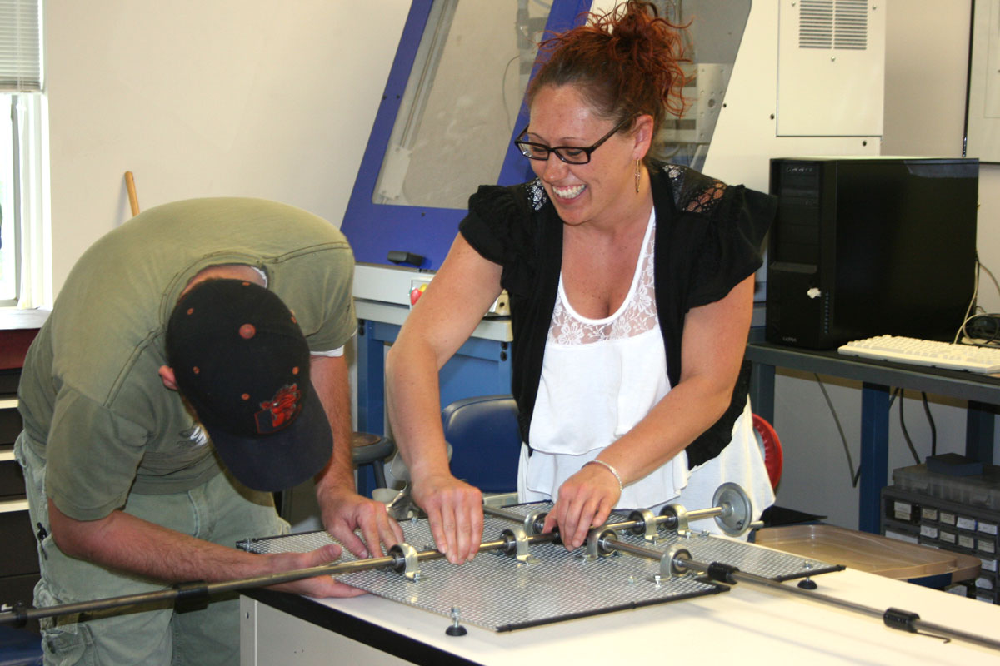
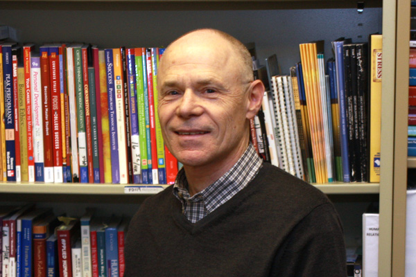
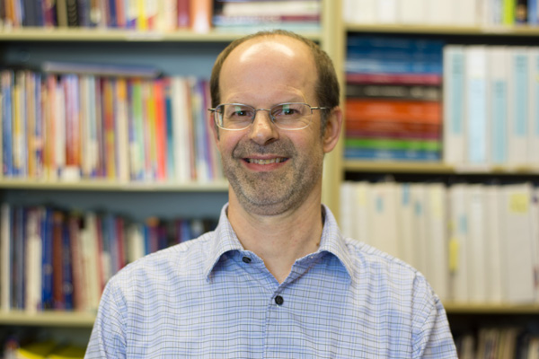

Two-Year Associate in Specialized Technology (AST) Degree Program
The South Hills Engineering Technology program prepares our student for engineering careers through the study and practice of three disciplines – Architectural, Mechanical and Civil Engineering. This comprehensive, challenging program incorporates drafting, solid modeling, Computer-Aided Drafting (CAD), and CNC programming with team-building, mathematics, and problem-solving skills.
In our Engineering Technology program, you will learn to develop innovative solutions and develop and apply critical thinking skills, applying engineering principles and utilize state-of-the-art technology to assist professional mechanical, civil, or architectural engineers. You will become proficient in CAD, learn to design and implement spreadsheets, accurately measure using a variety of precision measuring instruments in the mechanical and civil fields and much more. Our ET students learn to work both independently, and to excel as part of a team environment.
Classes will include the study of Mechanical Drafting and Mechanical CAD, Architectural CAD and Civil CAD, Building Codes, Machining Processes and CNC Programming. Mechanical Design, Civil Design, Architectural Design, Materials Science and Physics.
Our Engineering Technology graduates work as CAD Technicians in the mechanical, civil, and architectural fields, as Engineering and Materials Technicians, and as Drafter/Designers.
Successful students in this program will be strong in technology, math, and science.
Karen Hughes
ET Program Coordinator / Full-time Instructor

Gary Powers
Full-time Instructor

John Henry
Adjunct Instructor
Heather Fink
Adjunct Instructor